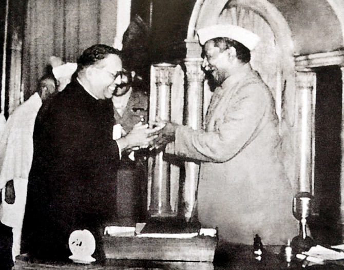

The Constitutional Thought & Speeches of Dr. B. R. Ambedkar
A verified institutional repository preserving 22 volumes of published writings, landmark Constituent Assembly debates, rare manuscripts, and multi-lingual transcripts.
Featured Landmark Documents
Swipe or scroll horizontally to inspect seminal texts, speeches, and legal draftings.
AI Semantic Search
Search by conceptual phrases or constitutional provisions across all 22 BAWS volumes and assembly speeches.
Explore Archive ›Knowledge Architecture
Interactive network graph connecting constitutional articles, economic treatises, and civil rights movements.
Inspect Network ›Chronological Milestones
A curated horizontal timeline tracking Dr. Ambedkar's education, public service, and historical milestones (1891–1956).
Open Timeline ›Manuscript OCR Studio
High-resolution facsimile digitization and automated Dublin Core metadata schema tagging for historical papers.
Digitize Scans ›Audio Archival Vault
Restored BBC radio interviews, Constituent Assembly proceedings, and multi-lingual historical speeches.
Listen to Vault ›Ambedkar AI Scholar
An institutional research desk providing verified answers and citations directly from the published writings.
Start Consultation ›Semantic Archival Explorer
Search by concept, constitutional article, or topic across published volumes and speeches.
Knowledge Architecture & Linkages
Visual network connecting constitutional provisions, landmark publications, and civil rights movements.
The Archival Odyssey of Babasaheb Ambedkar
Six decades of revolutionary scholarship, civil rights mobilizations, constitutional architecture, and moral renaissance mapped across primary historical evidence.
Manuscript Digitization & Extraction
High-fidelity optical character recognition and automated Dublin Core metadata tagging.
Click to upload custom PNG, JPG, or PDF archival facsimile.
Digitized Transcription
ReadyAudio & Historical Recordings Vault
Restored historical broadcasts and speeches in lossless archival fidelity.
BBC Radio Interview: Dr. Ambedkar on Parliamentary Democracy
Location: London Studio • Restored Audio
Historical radio broadcast where Dr. Ambedkar discusses democratic institutions, economic equality, and parliamentary governance.

14:20Constituent Assembly Final Session (Nov 25, 1949)
Location: Assembly Hall, New Delhi • Official Record
Historic newsreel recording Dr. Ambedkar's final presentation of the Draft Constitution of India.
Why I Chose Buddha and His Dhamma
Location: Deekshabhoomi, Nagpur • Historic Address
Address detailing moral philosophy, rationality, and human dignity in the Navayana revival.
Ambedkar AI Scholar
An institutional research desk providing verified citations grounded directly in the 22 published volumes.